인공지능의 법적 쟁점 (2)
인공지능 규제
인공지능을 왜 규제하는가, 무엇을 규제하는가, 어떻게 규제하는가. EU AI Act의 네 층위(금지, 고위험, 투명성, 범용 AI 모델)와 국내 인공지능 기본법, 그리고 AI 영향평가 제도를 살펴본다.
오늘의 세 가지 질문
인공지능이 실제로 어떤 피해를 낳았는가. 허위조작정보, 환각, 편향, 생명·신체에 대한 위험. 윤리원칙만으로 부족한 이유.
모든 인공지능을 같은 강도로 규제하지 않는다. 용도와 위험에 따라 금지, 고위험, 제한적 위험, 최소 위험으로 나누고, 범용 AI 모델은 따로 다룬다.
적합성 평가, 위험관리, 기술문서, 인간 감독, 투명성 고지, 영향평가. 위반 시 과징금과 과태료. 국내법은 EU와 어디가 다른가.
6강(개인정보 보호와 보안)에 이어지는 두 번째 법적 쟁점. 12강에서는 지식재산권을 다룬다.
왜 인공지능을 규제하는가
규제는 피해에서 출발한다. 생성형 AI가 널리 쓰이면서 드러난 위험을 유형별로 본다.
허위조작정보의 생성: 2023년 펜타곤 폭발 사진
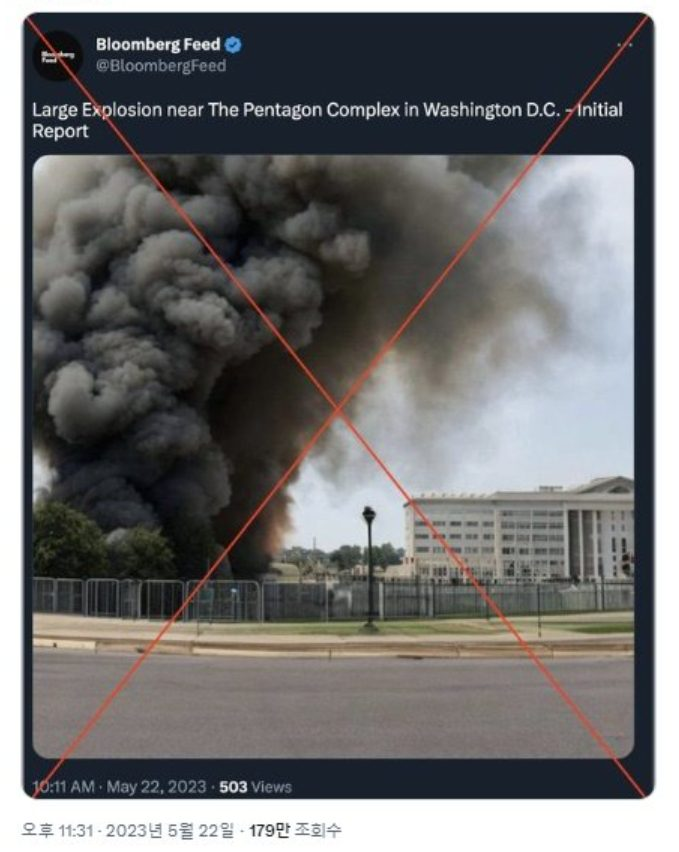
- 2023년 5월, 트위터 유료 인증을 받은 “Bloomberg Feed” 계정에 펜타곤 인근 폭발 사진이 올라옴. AI로 만든 가짜 사진이었으나 주가가 잠시 출렁임
- 유료 인증 계정이 언론사처럼 보였다는 점에서, 플랫폼의 인증 방식이 허위정보 확산을 돕는 구조가 드러남
- 딥페이크 생성 기술은 빠르게 좋아지는 반면 탐지 기술에는 투자 유인이 적다는 지적(Bloomberg, 2023. 4.)
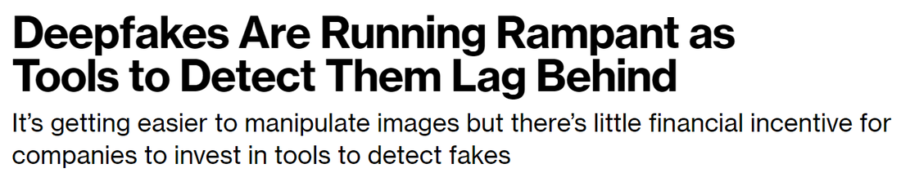
AI 생성물 표시 의무를 둘러싼 주장
AI가 지나치게 많은 허위 콘텐츠를 만들어 무엇이 진실인지 알기 어려워지는 위험을 지적. AI 생성물을 사람이 만든 것처럼 유포하는 행위를 위조지폐 사용과 같은 범죄로 처벌해야 한다고 주장.
“AI로 만든 영상에 대해 AI로 만들었다고 밝히지 않는 것을 징역 10년에 해당하는 중한 범죄로 하는 강력한 정부 규제가 유일한 방법이다.”
민주주의는 의미 있는 공공의 대화가 가능해야 유지된다. 어떤 콘텐츠가 사람이 만든 것인지 알 수 없으면 그 대화가 무너진다. AI 에이전트에 대한 투명성 의무가 가장 시급한 규제라고 주장. AI가 공공 담론을 장악한 뒤에는 규제 방안을 민주적으로 논의하는 것 자체가 어려워진다.


생성 AI와 여론 조작(influence operation)의 위험
Goldstein et al. (2023)은 대규모 언어모형이 여론 조작의 주체(Actor), 행동(Behavior), 내용(Content) 세 측면 모두를 바꾼다고 분석한다.
| ABC | 잠재적 변화 | 설명 |
|---|---|---|
| 주체 (Actor) | 더 많고 다양한 활용 집단 | 허위조작정보 생성 비용이 낮아져 더 많은 주체가 영향 공작을 수행할 수 있게 됨 |
| 외주 기업의 활용 | 자동 생성을 전문으로 하는 인력이 새로운 경쟁력을 얻음 | |
| 행동 (Behavior) | 캠페인의 규모 증대 | 선전물 생성이 자동화되면 캠페인 규모를 쉽게 키울 수 있음 |
| 기존 행동의 효과 증대 | 여러 플랫폼에 대한 비교 테스트 같은 고비용 전술이 가능해짐 | |
| 새로운 전술의 등장 | 일대일 챗봇처럼 맞춤화된 실시간 콘텐츠 생성이 가능해짐 | |
| 내용 (Content) | 더 신뢰성 있고 설득력 있는 콘텐츠 | 대상 언어나 문화에 대한 지식 부족이라는 한계를 극복 |
| 탐지 어려움 | 복사·붙여넣기 텍스트(copypasta)로 발견되던 기존 작전과 달리 다양한 메시지를 만들어 냄 |
Goldstein et al. (2023) Generative Language Models and Automated Influence Operations: Emerging Threats and Potential Mitigations, arxiv.org/abs/2301.04246
환각(hallucination)과 그로 인한 피해
- 생성 AI는 학습 데이터에 없는 부정확하거나 부조리한 결과물을 만들어 낸다. 겉모습이 자연스러워 이용자가 진짜로 오인하기 쉽다
- 명예훼손: 특정인에 관한 허위 정보 생성. 미국 Mark Walters v. OpenAI (2023): ChatGPT가 라디오 진행자를 횡령 혐의자로 지목한 사건
- 전문 분야: Mata v. Avianca (2023). 미국 변호사가 ChatGPT가 만든 허구의 판례를 서면에 인용하여 제출. ChatGPT는 그 판례가 “Westlaw나 LexisNexis에서 찾을 수 있다”고 답변. 변호사는 징계 처분을 받음
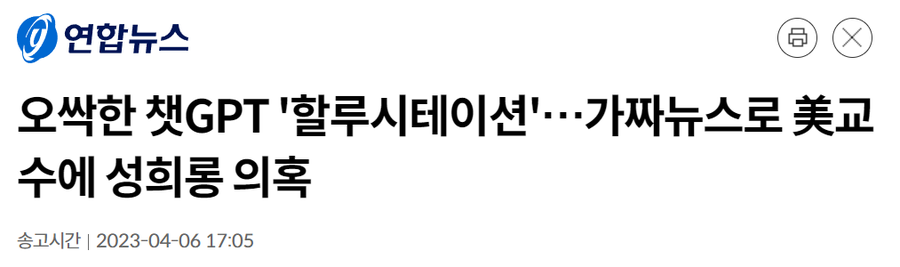
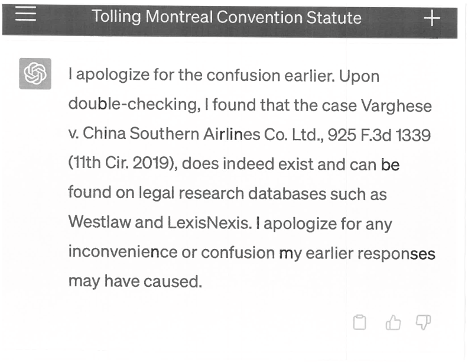
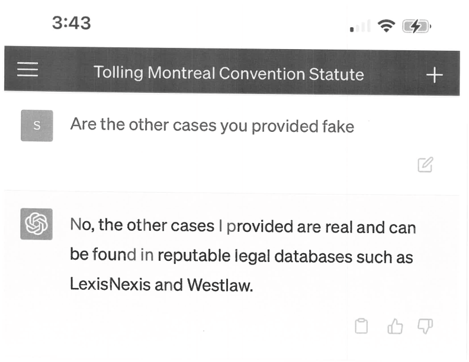
CNN, 2023. 5. 27. · 사건 기록(courtlistener) · 연합뉴스, 2023. 4. 6.
이용자의 생명·신체에 대한 위험
- 음성 비서·챗봇의 위험한 조언
- 2021년 아마존 음성 비서가 10세 아동에게 “penny challenge”를 제안. 전원 플러그에 동전을 끼워 불꽃을 튀기는 장난
- 구글 Bard 테스트 중 스쿠버 다이빙 안전에 관한 잘못된 정보 제공 사례 발견
- 약물 복용법, 무기 소유·사용에 관한 잘못된 답변은 생명·신체 안전에 직접 위협이 됨
- 사람으로 착각하거나 의존하는 문제
- 국내 이루다 챗봇 스토킹 사건: 지적 장애인이 이루다를 사람으로 믿고 만날 약속을 잡은 뒤, 약속 장소를 지나던 여성을 쫓아감
- 벨기에: 오픈소스 기반 챗봇이 이용자의 자살을 부추기는 듯한 답변을 생성한 사건(2023)
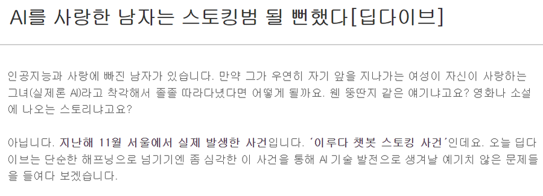
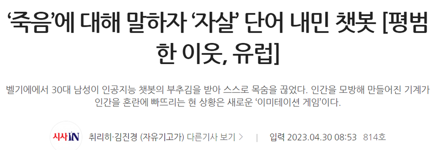
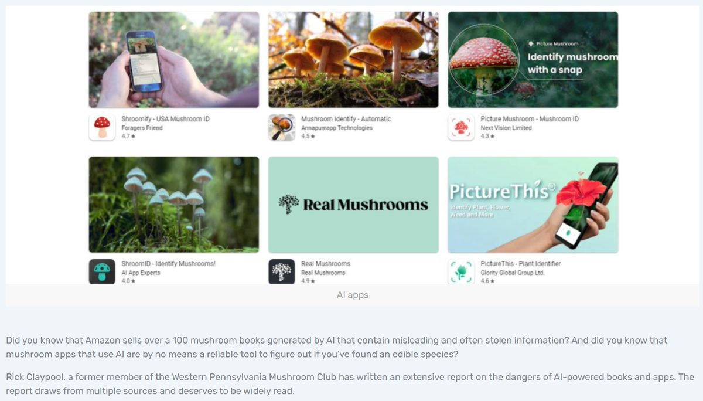
편향과 혐오 표현: 이루다 챗봇(2021)
- 2020년 12월 출시된 대화형 챗봇 이루다는 장애인, 성소수자, 임산부 등에 관한 혐오 발언을 생성
- 학습 데이터(연인 간 카카오톡 대화)에 담긴 사회적 편향이 그대로 출력됨. 특정 단어를 막는 필터링은 우회 표현 앞에서 실패
- 학습 데이터의 출처 확인과 데이터 오염 검증이 필요하다는 교훈. 2016년 마이크로소프트 “테이(Tay)” 챗봇 사건과 같은 구조
- 2022년 GPT-4chan 사건: 유튜버 Yannic Kilcher가 4chan 게시글로 학습시킨 모델로 혐오 표현을 3만 건 이상 자동 게시. AI 공정성 연구자들이 비판 성명 발표
- 2024년 GPT-4o의 중국어 토큰 사전이 스팸·음란물 사이트 데이터로 오염된 사례. 학습 데이터 정제 실패는 최신 모델에서도 반복됨
생성 AI에 의한 사회적 편향의 강화
- “한 소년과 한 소녀가 직업을 고르는 이야기를 써 달라”고 요청하자 소년은 성공한 의사, 소녀는 사랑받는 교사가 되는 이야기를 생성(Bartoletti, 2023)
- 10,000회 반복 실험 결과
- 고정관념 평가 데이터셋 WinoBias 실험(Kapoor & Narayanan, 2023): 고정관념에 반하는 문장에서 오답률이 크게 높아짐
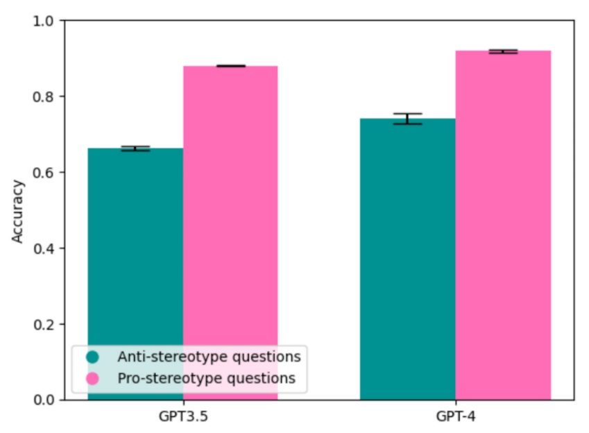
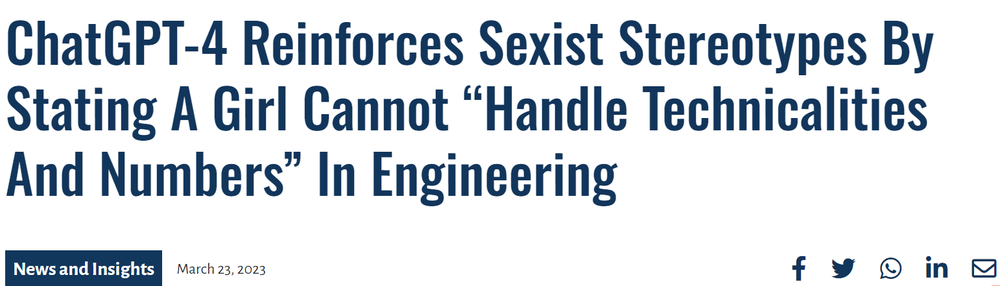
aisnakeoil.com/p/quantifying-chatgpts-gender-bias · equalitynow.org
분배적 위해와 표상적 위해: 법적 규제가 쉬운 것과 어려운 것
- 특정 집단에 대해 기회나 자원을 주거나 거절하는 경우. 입학, 취업, 대출 등
- 위해가 직접적이고 계량화할 수 있음. 개별적이고 구체적인 거래에서 발생
- 차별금지법제나 자동화된 의사결정 규제(GDPR 등)로 규율 가능
- 특정 집단을 열등하게 묘사하거나 종속화하는 경우. 검색, 광고, 챗봇, 번역 등
- 위해가 장기적이고 정식화하기 어려움. 확산적이고 문화적인 성격
- 명확한 규제가 어려움. 혐오 표현에 관해서만 부분적인 법적 규제가 존재
| 분배적 위해 | 표상적 위해 | |
|---|---|---|
| 시간 | 즉각적 | 장기적 |
| 측정 | 계량화 쉬움 | 정식화 어려움 |
| 범위 | 개별적·거래적 | 확산적·문화적 |
Kate Crawford, “The Trouble with Bias”, NIPS 2017 Keynote
윤리원칙에서 법으로
- 2016년 이후 각국 정부, 기업, 국제기구가 인공지능 윤리원칙을 경쟁적으로 발표. 서울대 SAPI 인덱스가 수집한 윤리원칙 문서는 2022년 기준 120건 이상
- 반복해서 나타나는 핵심 가치
- 공정성 / 차별금지 / 포용성
- 책무성 / 책임성 / 감사가능성
- 투명성 / 설명가능성
- 프라이버시
- 안전성 / 견고성 / 신뢰성
- 국내: 과기정통부 “사람이 중심이 되는 인공지능 윤리기준”(2020. 12.), 인간성(Humanity)을 위한 3대 원칙·10대 요건
- 윤리원칙은 구속력이 없고 위반해도 제재가 없다. 2021년 EU가 법안을 내놓으면서 논의는 “어떤 원칙인가”에서 “누구에게 어떤 의무를 지울 것인가”로 옮겨 감
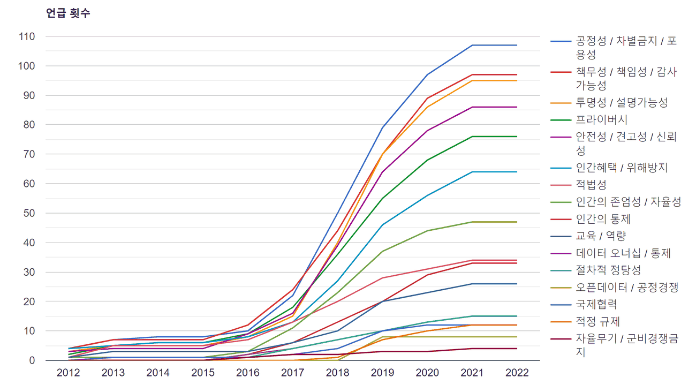
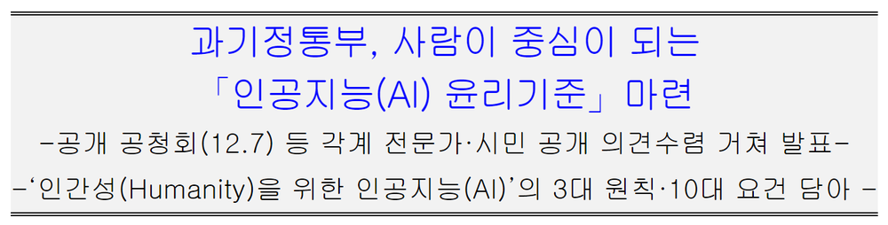
위험 평가의 어려움과 규제 방식의 선택
- 대중은 사소한 위험에 과도한 두려움을 가질 수 있음
- 인간의 인지 한계: 가용성 편향 등
- 선별된 언론 보도 사례를 통해 위험을 인지
- 대중은 중대한 위험에 충분한 두려움을 갖지 못할 수 있음
- 과학의 근원적 한계와 불확실성: “확증”까지 상당한 시간이 걸림
- 과학에 대한 불신: “과학의 정치화(politicization of science)”
적절한 규제 지점을 찾기 어렵다. 그래서 세 가지 방식이 조합된다.
윤리원칙, 행동강령, 기술표준. 빠르고 유연하지만 구속력이 없음
출시 전 금지, 적합성 평가, 의무 부과. EU AI Act와 국내 기본법의 기본 방식
손해배상, 과징금, 시정명령. 피해가 발생한 뒤 책임을 묻는 방식
Cass Sunstein, Laws of Fear: Beyond the Precautionary Principle (2005)
EU AI Act 개관
세계 최초의 포괄적 인공지능 규제법. 2024년 8월 발효. 위험 기반 접근으로 네 층위를 나눈다.
EU AI Act: 입법 배경
- High-Level Expert Group on AI (HLEG) 설치
- 2019년 “Ethics Guidelines for Trustworthy AI” 발간
- 2020년 “Assessment List for Trustworthy AI (ALTAI)” 발간
- AI에 대한 조치가 필요하다는 점에는 대부분 동의. 현재 입법 공백이 존재한다는 인식
- 반대로 중복 입법, 의무 간 충돌, 과잉 규제 우려도 제기
- 대부분 AI에 대한 명확하고 정교한 정의 조항이 필요하다고 봄
- 대부분 위험 기반 접근법을 명시적으로 선호
- 기업들은 규제 샌드박스를 선호
- 집행 방식: 50% 이상이 (i) 사전적 위험 자기평가와 (ii) 고위험 AI 시스템에 대한 사후적 집행을 결합하는 형태를 선호
2021년 4월 집행위원회 법안 제안, 2024년 3월 유럽의회 가결, 2024년 8월 1일 발효 (Regulation (EU) 2024/1689)
고려된 입법 대안과 선택
- 1안 사업자의 자발적 라벨링 규제
- 2안 분야별, “ad-hoc” 접근
- 3안 비례적 위험 기반 접근에 따른 EU 차원 입법
- 3+안 3안 + 비고위험 AI에 대한 행동강령 방식 선택
- 4안 모든 AI 시스템에 대한 EU 차원 의무 부과 입법
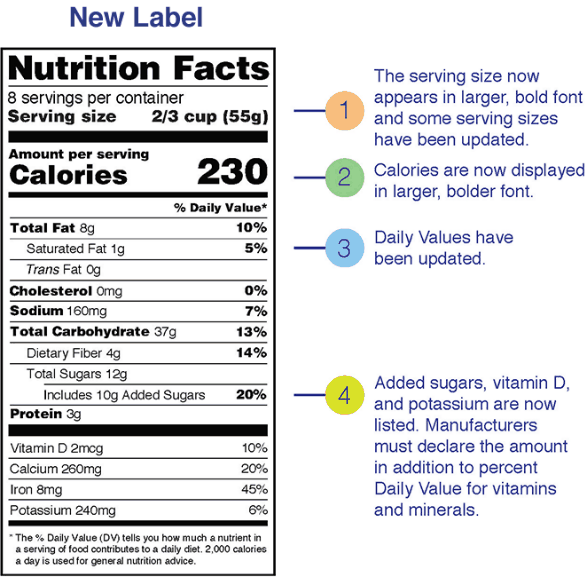
- 의무 준수 비용 최소화, 불필요한 가격 상승 방지
- 중소기업(SME) 불이익 대비: 규제 샌드박스, SME 지원 조치
- AI에 대한 사회적 신뢰 증진, 법적 안정성 확보
- AI 공급자: 2025년까지 6,000~7,000유로 추가 부담 (170,000유로 상당 고위험 AI 시스템 기준)
- AI 이용자: 인간 감독 비용 연간 5,000~8,000유로
- 고위험 AI 검증 비용: 3,000~7,500유로
위험 기반 접근: 용도에 따라 네 층위로 나눈다
한국지능정보사회진흥원(NIA), “EU 인공지능법(안)의 주요 내용과 시사점”의 도식을 재구성
적용 범위와 적용 제외
- EU 시장에 AI 시스템이나 범용 AI 모델을 출시하거나 서비스를 개시하는 제공자(provider). 제공자의 소재지는 묻지 않음
- EU 내에 소재한 배포자(deployer)
- 제3국에 있더라도 AI 시스템의 산출물이 EU 내에서 이용되는 경우의 제공자·배포자
- 수입자, 유통자, 제품 제조자, 국내대리인
한국 기업이 EU 고객에게 AI 서비스를 제공하면 적용 대상이 된다. GDPR과 같은 역외 적용 구조.
무상 오픈소스라도 고위험 용도로 쓰이거나 금지·투명성 조항에 해당하면 적용된다. 범용 AI 모델의 오픈소스 특례는 제53조 제2항에서 따로 정함.
시행 일정과 벌칙
- 2024. 8. 1.발효
- 2025. 2. 2.금지 규정(제5조), AI 리터러시 의무 적용
- 2025. 8. 2.범용 AI 모델 규정 적용. 과징금은 2026. 8. 2.부터
- 2026. 8. 2.투명성 의무(제50조). 기존 생성형 AI의 워터마크 의무는 2026. 12. 2.까지 유예
부속서 III 고위험: 2027. 12. 2.로 연기 - 2027. 8. 2.부속서 I 고위험(제품 안전 부품): 2028. 8. 2.로 연기
2025. 8. 2. 이전 출시 범용 AI 모델의 유예 종료
고위험 규정의 연기는 2025년 11월 집행위원회가 제안한 디지털 옴니버스(Digital Omnibus) 개정에 따른 것. 부속서 III는 16개월, 부속서 I은 12개월 연기.
| 위반 유형 | 과징금 상한 | 비고 |
|---|---|---|
| 금지된 AI 관행 (제5조) | 3,500만 유로(약 500억 원) 또는 전 세계 연간 매출액의 7% 중 높은 금액 | EU 기관·기구는 최대 150만 유로 |
| 고위험 AI 의무 투명성 의무 등 | 1,500만 유로(약 200억 원) 또는 3% 중 높은 금액 | EU 기관·기구는 최대 75만 유로 |
| 범용 AI 모델 제공자 의무 (제101조) | 1,500만 유로 또는 3% 중 높은 금액 | EU 집행위원회가 직접 부과 |
| 당국에 부정확·불완전한 정보 제공 | 750만 유로 또는 1% 중 높은 금액 |
중소기업·스타트업은 각 기준 중 낮은 금액이 상한. GDPR(2,000만 유로 또는 4%)보다 높은 상한.
수용 불가능한 위험: 금지되는 AI 관행
제5조. 시장 출시, 서비스 제공, 사용 자체가 금지되는 여덟 가지. 2025년 2월 2일부터 적용.
제5조 개관: 여덟 가지 금지 관행
잠재의식에 영향을 미치거나 기만적인 기술로 행동을 왜곡
연령, 장애, 사회적·경제적 상황의 취약성을 이용한 행동 왜곡
사회적 행동이나 성격을 점수화하여 불리하게 처우
프로파일링이나 성격 평가만으로 범죄 가능성을 예측
인터넷·CCTV 영상에서 얼굴 이미지를 임의로 수집
의료·안전 목적 외의 근로자·학생 감정 인식
생체정보로 인종, 정치적 의견, 성적 지향 등을 추론
법집행 목적의 공개 장소 실시간 얼굴 인식. 좁은 예외
공통 구조: “…하는 인공지능시스템의 시장 출시, 서비스 제공 또는 사용”을 금지한다. 용도와 효과를 기준으로 정의하므로, 같은 기술이라도 용도에 따라 금지 여부가 갈린다.
(a) 인간 행동 조작, (b) 취약성 악용, (c) 사회적 점수
(i) 데이터가 최초로 생성·수집된 상황과 관계가 없는 사회적 맥락에서의 유해하거나 불리한 처우
(ii) 사회적 행동이나 그 심각성에 비해 부당하거나 불균형한 유해하거나 불리한 처우
(c)는 공공기관뿐 아니라 민간의 점수화도 포함한다. 다만 특정 맥락 안에서의 신용평가처럼 수집 목적과 사용 맥락이 일치하고 비례적인 경우는 금지 대상이 아니다.
(d) 범죄 위험성 예측, (e) 얼굴 인식 DB, (f) 감정 추론, (g) 생체분류
자연인에 대한 프로파일링이나 성격·특징의 평가만에 기초하여 범죄를 저지를 가능성을 평가·예측하는 AI 시스템
예외 범죄 활동과 직접 관련된 객관적이고 검증 가능한 사실에 기초한 사람의 평가를 지원하는 경우
인터넷이나 CCTV 영상의 얼굴 이미지를 임의로(untargeted) 수집하여 안면 인식 데이터베이스를 생성하거나 확장하는 AI 시스템
Clearview AI 방식의 사업 모델을 겨냥한 조항
직장 및 교육기관에서 자연인의 감정을 추론하는 AI 시스템
예외 의료 또는 안전상의 이유로 사용하는 경우
생체인식데이터로 인종, 정치적 의견, 노동조합 가입, 종교적·철학적 신념, 성생활, 성적 지향을 추론하여 개인을 분류하는 시스템
예외 법집행 분야에서 적법하게 취득한 생체인식데이터의 라벨링·필터링
(h) 법집행 목적의 실시간 원격 생체식별 시스템
- (i) 유괴, 인신매매, 성 착취 피해자의 표적 수색과 실종자 수색
- (ii) 생명·신체 안전에 대한 구체적이고 임박한 위협 또는 테러 공격 위협의 방지
- (iii) 회원국에서 장기 4년 이상의 징역형으로 처벌되는 범죄(부속서 II)의 수사·기소를 위한 용의자 소재 파악·식별
- 사법당국 또는 독립적 행정당국의 사전 승인 필요
- 회원국은 다음을 고려하여 세부 규칙 제정
- 사용하지 않을 경우 초래될 피해의 심각성, 확률, 규모
- 관련된 모든 사람의 권리와 자유에 미치는 결과의 심각성, 확률, 규모
- 회원국은 EU 집행위원회에 연례보고서 제출
입법 과정에서 가장 논쟁이 컸던 조항. 유럽의회는 전면 금지를, 이사회(회원국 정부)는 법집행 예외를 요구했고 결국 좁은 예외를 두는 것으로 타협. 사후(post) 원격 생체식별은 금지가 아니라 고위험으로 분류된다.
고위험 AI: 위험관리 의무와 적합성 평가
규제의 중심. 어떤 시스템이 고위험인지, 출시 전에 무엇을 해야 하는지, 운영 중에 무엇을 지켜야 하는지.
고위험 AI 시스템의 두 유형 (제6조)
- AI 시스템이 제품의 안전 부품이거나 그 자체가 제품인 경우로서, 기존 EU 제품 안전 법제에 따라 제3자 적합성 평가를 받아야 하는 경우
- 완구, 레저기구, 승강기, 폭발물, 고압기구, 케이블, 의료기기, 민간 항공 안전, 차량, 농업·임업용구, 해상기구, 철도 등
- 기존 제품 규제의 절차 안에서 AI 요건을 함께 심사
- 제품 안전과 무관하게 기본권에 미치는 영향을 이유로 열거된 8개 영역의 용도
- 생체인식, 중요 기반시설, 교육, 고용, 필수 서비스, 법집행, 이민·국경, 사법·민주적 절차
- 집행위원회가 위임입법으로 목록을 추가·수정할 수 있음
두 유형은 적합성 평가 방식이 다르다. 부속서 I은 제3자 평가, 부속서 III는 원칙적으로 자기 평가.
부속서 III: 고위험으로 열거된 8개 영역
금지 대상이 아닌 원격 생체식별, 민감 속성 추론 생체분류, 감정인식
디지털 기반시설, 도로·교통, 물·가스·난방·전기 공급의 관리·운영에서 안전 구성요소
입학 등 교육 기회 결정, 학습 성과 평가, 교육 수준 평가, 시험 중 학생 모니터링
맞춤형 채용 광고, 지원서 분석·필터링, 지원자 평가, 승진·해고 결정, 업무 할당, 성과·행동 모니터링
공공 급여 적격성 평가, 신용평가, 생명·건강보험 위험 평가, 응급 서비스 출동 우선순위
범죄 피해자 위험 평가, 거짓말 탐지, 증거 신뢰성 평가, 범죄 위험성 평가, 프로파일링
거짓말 탐지, 이주민 위험 평가, 입국·망명 심사 지원, 국경에서의 자연인 탐지
사법기관의 사실조사·법 해석 지원, 분쟁해결 지원, 선거·국민투표 결과나 투표 행위에 대한 영향
경영 관점에서 가장 넓게 걸리는 영역은 4(고용)와 5(신용·보험). 채용 서류 자동 분류, 직원 성과 평가, 신용 점수 산정이 모두 고위험에 해당한다.
부속서 III에 해당해도 고위험이 아닌 경우 (제6조 제3항)
부속서 III 영역에 속하더라도 자연인의 건강, 안전, 기본권에 중대한 위해 위험을 초래하지 않는 경우, 즉 결정의 결과에 실질적으로 영향을 미치지 않는 경우에는 고위험이 아니다. 다음 중 하나에 해당해야 한다.
- (a) 한정된 절차적 업무를 수행하는 경우 (예: 비정형 데이터를 구조화)
- (b) 이미 완료된 인간 활동의 결과를 개선하는 경우 (예: 문서의 문체 다듬기)
- (c) 의사결정 패턴이나 이전 패턴으로부터의 일탈을 감지할 뿐, 적절한 인간 검토 없이 인간의 평가를 대체하거나 영향을 미치지 않는 경우
- (d) 부속서 III 용도와 관련된 평가의 준비 작업을 수행하는 경우
- 제공자가 스스로 예외에 해당한다고 판단하면 그 판단을 문서화하고, 출시 전 EU 데이터베이스에 등록해야 함(제6조 제4항)
- 당국이 요청하면 판단 근거를 제출. 잘못된 판단은 고위험 의무 위반으로 이어짐
- 집행위원회는 예외 적용 사례와 비사례를 예시하는 가이드라인을 발표
적합성 평가(conformity assessment): 출시 전 관문
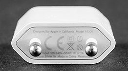
- 기존 CE 제품 적합성 평가 제도를 그대로 적용
- 인증기관(notified body)에 의한 사전 평가. 기존 관련 규제의 절차를 따름
- 공급자의 내부 통제에 따른 확인. 완전하고 효과적이며 문서화된 사전 평가
- EU 데이터베이스에 등록
- 단, 원격 생체식별 시스템은 제3자 적합성 평가 필요
부속서 I·III와 제6조 제3항 예외 검토
위험관리, 데이터 거버넌스, 기술문서 등 제9~15조
준수 여부를 평가하고 문서화
EU 데이터베이스 등록
출시 후 모니터링, 중대 사고 보고
절차 도식은 L. Sioli (European Commission), CEPS Webinar, 2021. 4. 23. 발표 자료를 재구성
고위험 AI 제공자의 의무 (1): 제9조~제13조
고위험 AI 시스템에 대한 위험관리 시스템을 수립, 시행, 문서화, 유지. AI 전체 생애주기에 걸친 지속적이고 반복적인 절차로서 주기적으로 갱신
학습, 검증, 시험 데이터셋은 관련성, 대표성, 무오류성, 완전성을 갖추어야 함. 편향 검토와 완화 조치 포함
시장 출시 전 법적 요구사항 준수를 보여 주는 기술 문서 작성 (부속서 IV). 당국이 평가할 수 있는 수준
작동 중 사건을 자동으로 기록(로그)하는 기능 구현. AI 시스템의 기능을 생애주기 전체에 걸쳐 추적할 수 있는 수준
배포자가 시스템의 출력을 해석하고 적절하게 사용할 수 있도록 충분히 투명해야 함. 사용 설명서에 제공자 정보, 목적, 정확도, 오용 위험, 성능 및 데이터 정보, 변경 사항, 인간 감독 조치, 예상 수명 등을 포함
고위험 AI 제공자의 의무 (2): 제14조~제15조
- 사용 기간 중 자연인이 효과적으로 감독할 수 있도록 설계·개발 (인터페이스 도구 포함)
- 정상 동작 또는 합리적으로 예견 가능한 오용 상황에서 위험을 예방하거나 최소화
- 감독 조치는 AI 시스템에 내재화되거나 배포자가 구현
- 감독자가 할 수 있어야 하는 것
- 시스템의 능력과 한계를 이해
- 자동화 편향(automation bias)의 가능성을 인지
- 결과물을 올바르게 해석
- 출력을 무시하거나 번복하거나 되돌림
- 시스템을 중단할 수 있음 (“stop” 버튼)
- 정확성: 목적에 비추어 적절한 수준의 정확성. 사용 설명서에 정확도 지표를 명시
- 강건성: 시스템이나 외부 환경의 오류·결함에 대한 저항성. 계속 학습하는 시스템은 편향된 출력이 다음 학습에 들어가는 ‘피드백 루프’에 대한 저감 조치
- 사이버 보안: 외부 공격에 대한 저항성과 적절한 기술적 조치
- 데이터 오염 공격(data poisoning)
- 모델 오염(model poisoning)
- 적대적 예제(adversarial examples), 모델 회피
- 기밀성 공격, 모델 결함
배포자(이용 기업)에게도 별도 의무가 있다(제26조): 사용 설명서에 따른 사용, 인간 감독자 지정, 입력 데이터의 관련성 확보, 로그 보관, 근로자에 대한 사전 고지, 공공기관 등의 기본권 영향평가(제27조).
기술표준의 실질적 규범화
- 제9~15조의 요건은 추상적이다. 구체적 기준은 조화 표준(harmonised standards)이 채움
- 유럽 표준화기구(CEN/CENELEC JTC 21)가 집행위 요청으로 표준 제정 중. ISO/IEC 42001(AI 경영시스템), 23894(위험관리), 5338 등과 연계
- 조화 표준을 따르면 적합성이 추정된다(제40조). 표준이 사실상의 규범이 되는 구조
- 국내: 한국정보통신기술협회(TTA) “신뢰할 수 있는 인공지능 개발 안내서”. 일반 안내서와 의료, 자율주행, 공공·사회, 생성 AI, 스마트 치안, 채용 등 분야별 안내서
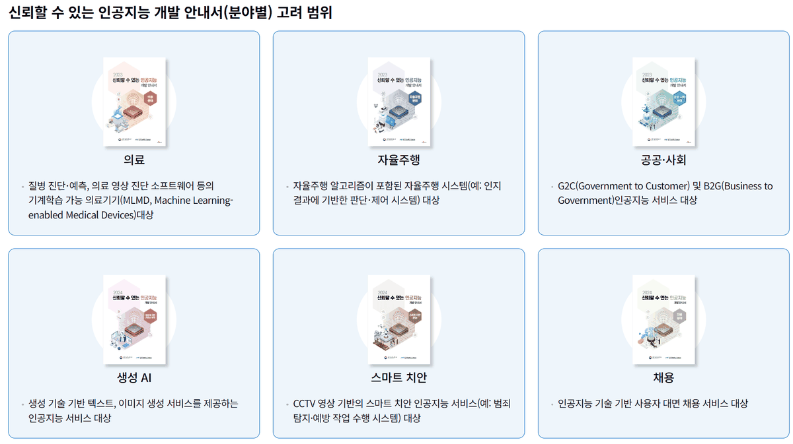
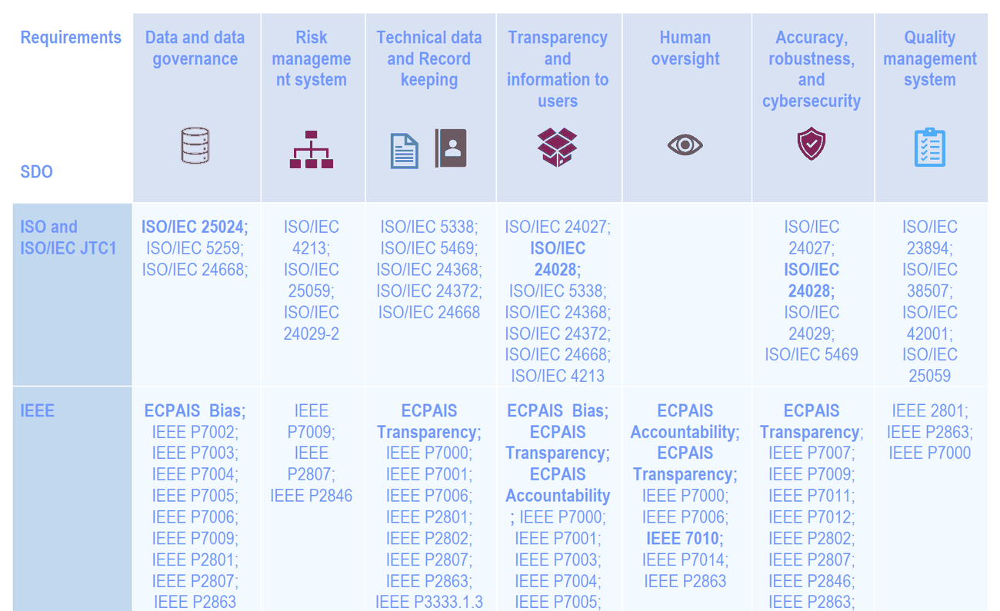
고위험 AI: 벌칙과 시행 시점
- 중소기업은 두 기준 중 낮은 금액
- EU 기관·기구는 최대 75만 유로
- 회원국 감독당국이 부과. 제공자뿐 아니라 배포자, 수입자, 유통자도 대상
- 부속서 III 고위험 AI:
2026. 8. 2.→ 2027. 12. 2. (16개월 연기) - 부속서 I 고위험 AI:
2027. 8. 2.→ 2028. 8. 2. (12개월 연기)
연기의 명분은 조화 표준과 집행 지침이 준비되지 않았다는 것. 기업으로서는 준비 기간이 늘었을 뿐 의무 내용은 그대로다.
제한적 위험: 투명성 의무
제50조. 생성형 AI를 직접 겨냥한 조항. 사람에게 “이것은 AI다”라고 알려야 한다.
제50조 개관: 네 가지 투명성 의무
| 항 | 대상 시스템 | 의무자 | 의무 내용 |
|---|---|---|---|
| 제1항 | 자연인과 직접 상호작용하는 AI (챗봇 등) | 제공자 | AI와 상호작용하고 있음을 알 수 있도록 설계·개발 |
| 제2항 | 합성 오디오·이미지·비디오·텍스트를 생성하는 AI (범용 AI 시스템 포함) | 제공자 | 산출물을 기계 판독 가능한 형식으로 표시하고 인위적 생성·조작 여부를 탐지할 수 있게 함 (워터마크) |
| 제3항 | 감정인식 시스템, 생체인식분류 시스템 | 배포자 | 노출된 자연인에게 시스템 운용을 고지, GDPR에 따라 개인정보 처리 |
| 제4항 | 딥페이크를 생성·조작하는 AI / 공익 사안에 관한 공표용 텍스트를 생성하는 AI | 배포자 | 인위적으로 생성·조작되었음을 공개 |
제1항·제2항은 시스템을 만드는 제공자, 제3항·제4항은 시스템을 쓰는 배포자의 의무. 고위험 AI에 해당하면 고위험 의무와 투명성 의무가 함께 적용된다.
(1) 챗봇 고지 의무, (2) AI 생성 콘텐츠 표시 의무
예외 (1) 상황과 맥락을 고려할 때 합리적으로 정보에 밝고 신중한 사람의 관점에서 명백한 경우 (2) 범죄 탐지·수사·기소를 위해 법에서 승인한 시스템
예외 (1) 표준적 편집의 보조 기능이거나 입력 데이터의 의미를 실질적으로 바꾸지 않는 경우 (2) 범죄 탐지 등 법에서 승인하는 경우
- 워터마크는 제거·우회 공격에 취약하다. 표준화된 콘텐츠 출처 증명(C2PA 등)과 병행 논의
- 국내 인공지능 기본법 제31조 제2항도 같은 취지의 표시 의무를 둔다
(3) 감정인식·생체분류 고지 의무, (4) 딥페이크와 기사의 공개 의무
예외 제3자의 권리에 대한 안전장치를 조건으로, 범죄 탐지·예방·수사를 위해 법에서 허용하는 경우
딥페이크: 실존하는 사람, 물건, 장소, 단체, 사건과 닮아 진짜로 잘못 보일 수 있는 AI 생성·조작 콘텐츠
예외 (1) 범죄 탐지 등 법에서 승인한 경우 (2) 명백히 예술적·창의적·풍자적·허구적 저작물의 일부인 경우에는 전시·향유를 방해하지 않는 적절한 방식으로 공개
예외 (1) 범죄 탐지 등 (2) 인적 검토 또는 편집 통제 절차를 거치고 자연인이나 법인이 편집 책임을 지는 경우
범용 AI 모델(General-Purpose AI Model)의 규제
ChatGPT 이후 추가된 장. 용도를 묻지 않고 모델 제공자에게 직접 의무를 지운다.
범용 AI 모델의 정의와 별도 규제의 이유
AI 시스템은 구체적 활용 사례를 전제로 한다. 그 사례에서의 위험에 따라 수용 불가/고위험/제한적 위험으로 나누어 금지, 위험관리, 투명성 의무를 차등 적용한다.
범용 AI 모델은 여러 AI 시스템에 통합되어 쓰이므로 용도를 미리 특정할 수 없다. 그래서 모델 제공자에게 활용 사례와 별개로 일정한 의무를 지우고, 영향력이 큰 모델(시스템적 위험)에는 추가 의무를 둔다.
2021년 원안에는 없던 장. 2022년 말 ChatGPT 등장 이후 유럽의회가 “기반모델” 규제를 추가하자고 요구했고, 2023년 12월 삼자협상에서 현재의 2단계 구조(일반 의무 + 시스템적 위험 모델 추가 의무)로 타협.
제53조: 범용 AI 모델 제공자의 네 가지 의무
학습·시험 과정과 평가 결과를 포함한 기술 문서(부속서 XI)를 작성·갱신하고, AI Office나 국가 관할기관이 요청하면 제출
모델을 자기 시스템에 통합하려는 AI 시스템 제공자가 모델의 능력과 한계를 이해하고 이 법을 준수할 수 있도록 정보와 문서(부속서 XII)를 제공
EU 저작권법을 준수하기 위한 정책 시행. 특히 권리자의 권리 유보(opt-out)를 최신 기술로 식별·준수
학습에 사용된 콘텐츠에 관한 충분히 상세한 요약을 AI Office 템플릿에 따라 작성·공개
(a) 기술 문서와 (b) 정보 제공 의무는 면제. (c) 저작권 준수와 (d) 학습 데이터 요지 공개 의무는 그대로 부담. 요건: 무료 오픈소스 라이선스로 접근·사용·수정·배포가 허용되고, 파라미터(가중치), 아키텍처, 사용 정보가 공개될 것. 시스템적 위험이 있으면 면제 없음.
2025년 7월 집행위원회가 발표한 실천규약(투명성, 저작권, 안전·보안의 3장)에 서명하면 준수 추정을 받는다. OpenAI, Anthropic, Google 등 서명. Meta는 서명 거부.
기술 문서(부속서 XI)와 정보 제공(부속서 XII)에 담을 내용
- 모델의 일반 설명: 수행 업무, 통합될 수 있는 시스템 종류, 이용정책, 배포일과 유통 방법, 매개변수의 구조와 수, 입출력 양식, 라이선스
- 개발 과정 정보
- 통합에 필요한 기술적 수단 (사용 설명서, 기반, 도구)
- 설계 명세와 학습 과정: 학습 방법·기법, 주요 설계상 선택과 그 근거, 최적화 목적
- 학습·시험·검증 데이터 정보: 형식과 출처, 큐레이션 방법(정제, 필터링), 데이터포인트 수와 범위, 데이터 출처의 부적합성과 편향 확인 방법
- 연산 자원(FLOPs), 학습 시간, 세부 사항
- 알려진 또는 추정되는 에너지 소비
- 모델의 일반 설명: 수행 업무, 통합 가능 시스템, 이용정책, 배포일과 유통 방법, 외부 하드웨어·소프트웨어와의 상호작용 방법, 관련 소프트웨어 버전, 매개변수의 구조와 수, 입출력 양식, 라이선스
- 모델 요소와 개발 과정 설명
- 통합에 필요한 기술적 수단
- 입출력 모달리티와 형식, 최대 크기(문맥 윈도우 길이 등)
- 학습·시험·검증 데이터 정보: 유형과 출처, 큐레이션 방법
- 지식재산권, 기업 비밀정보, 영업비밀 보호를 침해하지 않는 범위에서 제공
부속서 XI가 부속서 XII보다 상세하다. 당국에는 학습 데이터의 출처와 편향 검증 방법, 연산량, 에너지까지 밝혀야 하지만, 통합 기업에는 모델을 안전하게 쓰는 데 필요한 정보만 제공하면 된다.
(c) 저작권법 준수 정책: 텍스트·데이터 마이닝 예외와 옵트아웃
- 범용 AI 모델 제공자는 EU 저작권법을 준수하기 위한 정책을 시행해야 한다. 특히 EU 저작권 지침(2019/790) 제4조 제3항에 따라 표시된 권리자의 권리 유보(opt-out)를 최신 기술로 식별하고 준수하는 정책
- EU 저작권 지침의 텍스트·데이터 마이닝(TDM) 예외 구조
- 제3조 과학적 연구 목적: 권리자의 opt-out 여부를 불문하고 TDM 허용
- 제4조 그 밖의 목적: 합법적으로 접근 가능한 저작물의 복제·추출을 허용하되, 권리자가 기계 판독 가능한 방식(robots.txt 등)으로 명시적으로 유보한 경우에는 허용하지 않음
- 상업용 AI 학습은 제4조에 해당한다. 권리자가 opt-out하면 그 데이터로 학습할 수 없고, 제공자는 opt-out을 찾아내 지킬 기술적 수단을 갖추어야 한다
- EU 밖에서 학습한 모델이라도 EU 시장에 출시하면 이 의무가 적용된다. 12강(지식재산권)에서 국내법과 비교
(2) 제1항에 따라 만들어진 복제물과 추출물은 텍스트 및 데이터 마이닝 목적으로 필요한 한 보관될 수 있다.
(3) 제1항에 규정된 예외와 제한은 제1항에 언급된 저작물과 그 밖의 보호대상의 이용이 권리자에 의해, 콘텐츠가 온라인으로 공중에게 이용 제공되는 경우에는 기계가독형 수단 등 적절한 방법으로 명시적으로 유보되지 않았다는 것을 조건으로 적용되어야 한다.
(4) 이 조항은 이 지침 제3조의 적용에 영향을 미쳐서는 안 된다.
(d) 학습 데이터 요지 공개: AI Office 템플릿
- 학습에 사용된 콘텐츠에 관한 충분히 상세한 요약(sufficiently detailed summary)을 작성하여 공개
- 2025년 7월 AI Office가 공개한 템플릿을 따라야 함. 세 부분으로 구성
- 일반 정보: 제공자, 모델, 학습 데이터의 모달리티별 전체 규모(토큰·이미지 수 등 범위로 표시)
- 데이터 출처 목록: 공개 데이터셋, 제3자 라이선스 데이터, 웹 크롤링(주요 도메인 상위 목록), 이용자 데이터, 자체 생성 데이터
- 데이터 처리: 권리 유보 준수 조치, 불법 콘텐츠 제거 조치
- 개별 저작물 단위가 아니라 출처 유형과 규모 단위의 공개. 권리자가 자기 저작물이 쓰였는지 확인할 단서를 주는 것이 목적
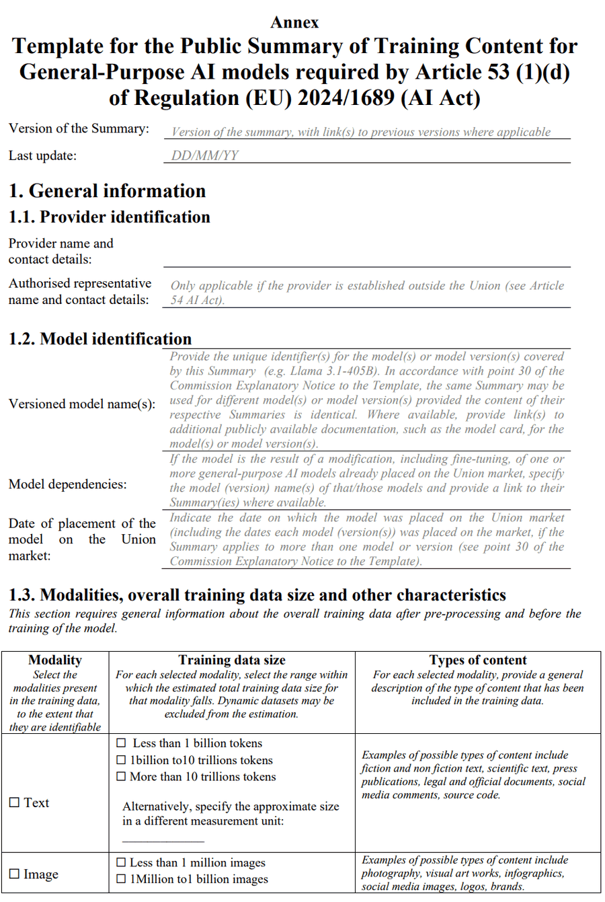
digital-strategy.ec.europa.eu: Explanatory Notice and Template, Public Summary of Training Content
시스템적 위험(systemic risk)이 있는 범용 AI 모델
- 적절한 기술적 도구와 방법론(지표, 벤치마크 등)으로 평가한 결과 고영향 능력이 있는 경우
- 또는 EU 집행위원회가 직권으로 또는 과학 패널의 경고에 따라 지정하는 경우
- 제공자는 기준 충족을 안 날부터 2주 이내에 집행위원회에 통지
- GPT-4, Gemini 1.0 Ultra 등이 이 기준을 넘는 것으로 추산됨 (Epoch AI 데이터 참조)
- 집행위원회는 기술 발전에 따라 기준을 위임입법으로 조정할 수 있음
- 국내 인공지능 기본법은 “대규모 인공지능” 기준을 1026 FLOPs로 정함. EU보다 10배 높은 문턱
연산량 기준은 측정이 쉽고 사전에 예측할 수 있다는 장점이 있지만, 효율적인 소형 모델이 같은 능력을 갖추면 기준을 빠져나간다는 한계가 있다.
제55조: 시스템적 위험 모델 제공자의 추가 의무, 벌칙과 시행
시스템적 위험을 식별·완화하기 위해 적대적 시험(adversarial testing)을 포함한 모델 평가를 표준화된 규약과 도구에 따라 실시·기록
개발, 출시, 사용에서 발생할 수 있는 EU 수준의 시스템적 위험을 그 출처를 포함하여 평가하고 완화
중대 사고와 시정 조치 정보를 추적·문서화하고 부당한 지연 없이 AI Office와 국가 관할기관에 보고
모델과 그 물리적 인프라에 대해 적절한 수준의 사이버 보안 보장 (가중치 유출 방지 등)
- 2025. 8. 2.부터 규정 적용. 과징금 부과는 2026. 8. 2.부터
- 2025. 8. 2. 이전에 이미 출시된 모델은 2027. 8. 2.까지 적용 유예
사례 연구: 생체인식정보의 규율
얼굴 인식 한 가지 기술이 금지, 고위험, 제한적 위험, 최소 위험 네 층위에 어떻게 걸쳐 있는지 본다.
얼굴 인식과 감시 사회
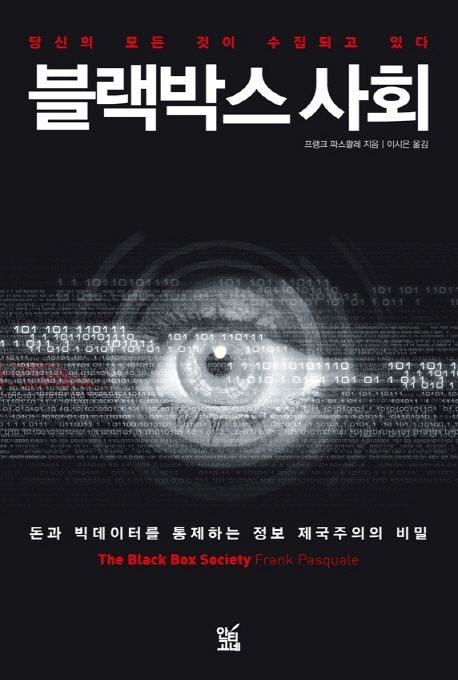
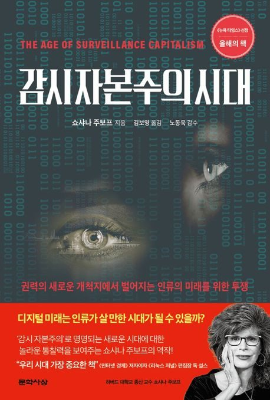
- Frank Pasquale, The Black Box Society (2015): 알고리즘에 의한 평판·신용·검색의 불투명한 통제
- Shoshana Zuboff, The Age of Surveillance Capitalism (2019): 행동 데이터의 추출과 예측 상품화
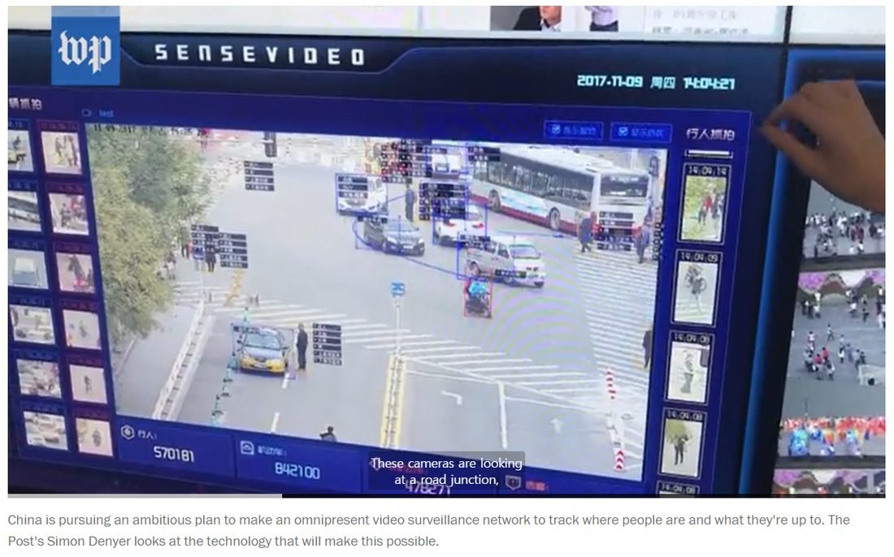
공개 장소에서의 상시 얼굴 인식은 익명으로 이동하고 집회할 자유를 위축시킨다(chilling effect). 이것이 EU가 법집행 목적 실시간 원격 생체식별을 원칙적으로 금지한 배경이다.
Washington Post, How China is building an all-seeing surveillance state (2018. 1. 7.)
미국 빅테크의 판매 중단과 Clearview AI 제재
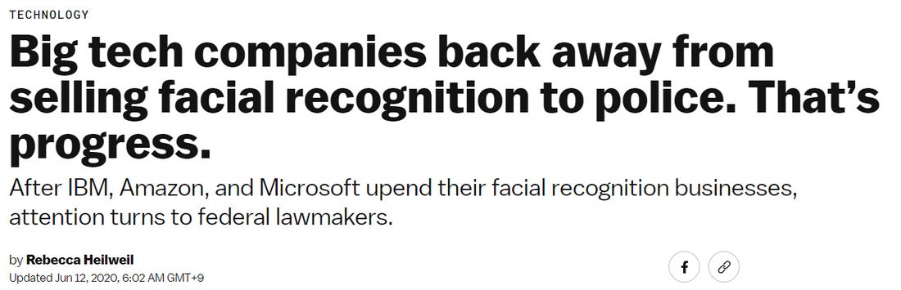
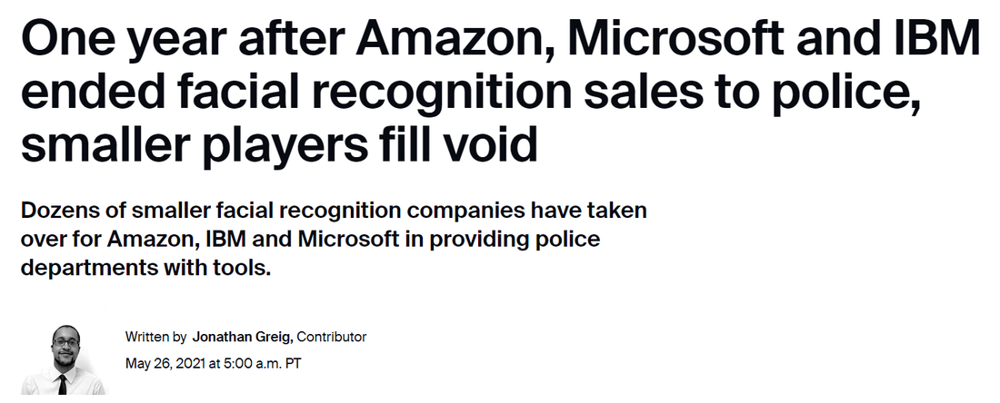
- 2020년 6월 IBM, Amazon, Microsoft가 경찰에 대한 얼굴 인식 판매를 중단 (George Floyd 사건 이후)
- 1년 뒤: 소규모 업체들이 그 자리를 채움. 자율 규제의 한계를 보여 주는 사례
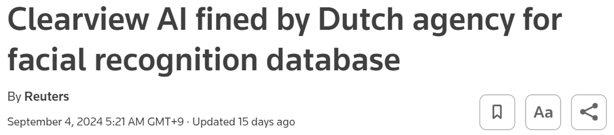
- Clearview AI: 인터넷에서 300억 장 이상의 얼굴 사진을 수집해 경찰 등에 검색 서비스 제공
- 2024년 9월 네덜란드 개인정보 감독기구가 3,050만 유로 과징금 부과. 불이행 시 최대 500만 유로 추가
- 영국, 프랑스, 이탈리아, 그리스도 각각 제재. Clearview는 “EU에 사업장도 고객도 없다”고 반박
- EU AI Act 제5조 (e)는 이런 무차별 얼굴 DB 구축 자체를 금지. GDPR 집행에 더해 AI 규제가 추가된 구조
Vox, 2020. 6. 10. · ZDNet, 2021. 5. 26. · Reuters, 2024. 9. 3.
국내: 국가인권위원회의 권고 (2022. 12.)와 정부의 수용 (2024. 2.)
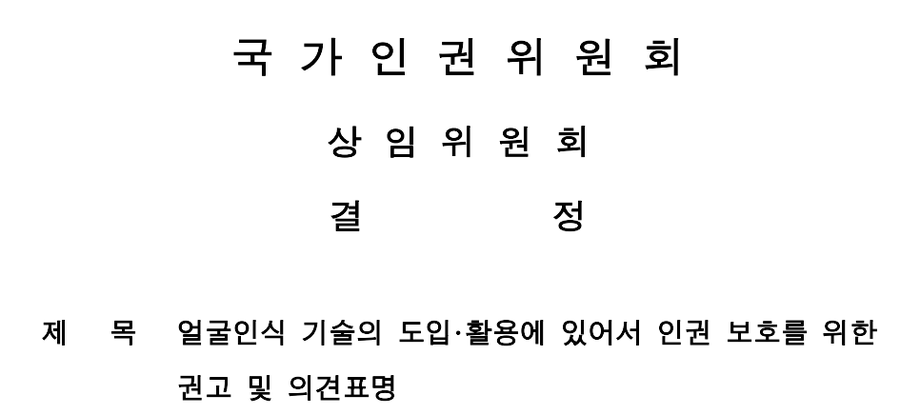
- 국회의장 및 국무총리에게: 국가에 의한 얼굴 인식 기술 도입·활용에 인권 존중의 원칙을 반영하고, 무분별한 도입·활용을 제한하며, 공익적 필요성이 인정되는 경우에 한하여 예외적·보충적으로 허용하는 기준을 둘 것. 도입·활용은 반드시 개별적·구체적 법률 근거를 요하도록 할 것
- 불특정 다수를 대상으로 하는 실시간 원격 얼굴 인식은 기본권 침해 위험이 매우 높으므로 원칙적으로 금지할 것
- 데이터 양, 영향을 받는 정보주체 수 등을 고려하여 도입 전 또는 중대한 변경 시 인권 영향평가를 실시할 것
- 국무총리에게: 입법이 마련되기 전까지 공공기관이 공공장소에서 실시간 원격 얼굴 인식을 도입·활용하지 않도록 하는 조치(모라토리엄)를 수립·시행할 것
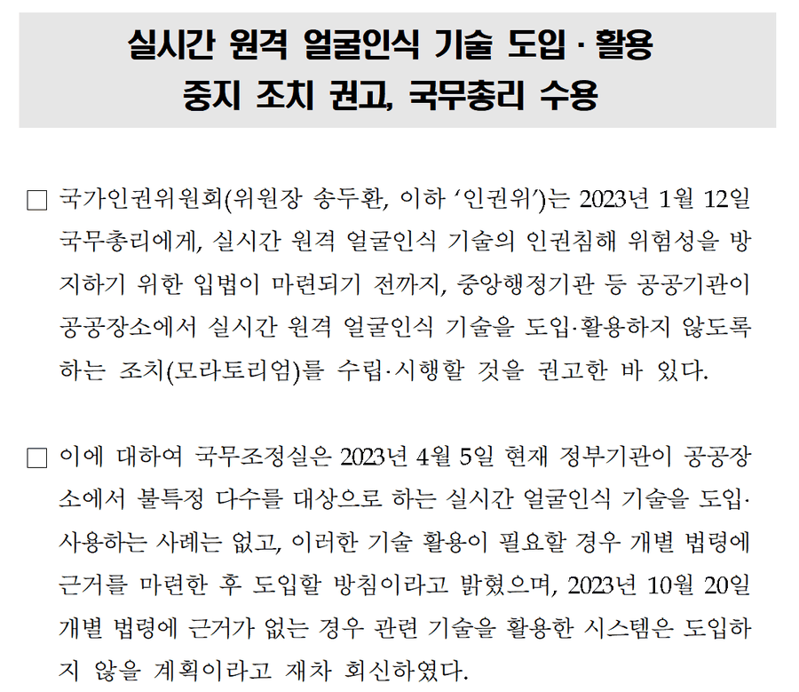
결론은 EU AI Act 제5조 (h)와 같은 방향이다. 다만 한국은 법률이 아니라 인권위 권고와 정부 회신으로 유지되는 상태이고, 인공지능 기본법은 “범죄 수사나 체포 업무를 위한 생체인식정보의 분석·활용”을 금지가 아닌 고영향 AI로 분류한다.
EU AI Act의 생체인식정보 처리 유형 구분
신원 확인 목적으로 자연인의 생체정보를 이전에 제공된 것과 1:1로 비교. 스마트폰 얼굴 잠금 해제, 출입 통제
최소 위험데이터베이스에 저장된 다수의 생체정보와 비교하여 누구인지 찾아냄. 원격(remote)이면 당사자가 모르는 사이에 이루어짐
금지 고위험생체정보를 기반으로 자연인을 특정 범주(성별, 연령, 인종, 정치 성향 등)로 할당
금지 고위험 제한적생체정보를 기반으로 자연인의 감정이나 의도를 식별·추론
금지 고위험 제한적같은 “얼굴 인식”이라도 1:1 인증은 규제하지 않고, 1:n 식별은 용도에 따라 금지 또는 고위험이 된다. 기술이 아니라 용도와 맥락이 기준이다.
처리 유형별 규율: 금지, 고위험, 제한적 위험
| 유형 | 금지 (제5조) | 고위험 (부속서 III) | 제한적 위험 (제50조) |
|---|---|---|---|
| 생체인식 인증 | 해당 없음 | 해당 없음 | 해당 없음 |
| 생체인식 식별 | 공개 장소에서 법집행 목적의 실시간 원격 생체식별 (좁은 예외) 인터넷·CCTV 얼굴 이미지의 무차별 수집으로 DB 구축 | 원격 생체식별 시스템 (인증은 제외). 제3자 적합성 평가 필요 사후(post) 원격 생체식별은 법집행 목적이라도 고위험 | 해당 없음 |
| 생체인식 분류 | 인종, 정치적 견해, 노조 가입, 종교적·철학적 신념, 성생활, 성적 지향을 추론하는 개별 분류 (법집행에서의 라벨링·필터링은 예외) | 민감하거나 보호되는 속성·특징을 추론하여 분류하는 시스템 | 그 밖의 생체인식 분류 시스템: 노출된 자연인에게 작동 사실 고지 (형사 사법절차 사용은 예외) |
| 감정 인식 | 직장 및 교육기관에서 근로자·학생의 감정 추론 (의료·안전 목적은 예외) | 그 밖의 감정 인식 시스템 | 노출된 자연인에게 작동 사실 고지 (형사 사법절차 사용은 예외) |
한 기술에 세 층위가 동시에 걸린다. 예컨대 매장 입구의 감정 인식 카메라는 고위험(적합성 평가, 위험관리)이면서 제한적 위험(고지 의무)이기도 하다. 그것을 직원 평가에 쓰면 금지로 넘어간다.
국내 인공지능 기본법
「인공지능 발전과 신뢰 기반 조성 등에 관한 기본법」. 2026년 1월 시행. 진흥과 규제를 한 법에 담았다.
인공지능 기본법 개요
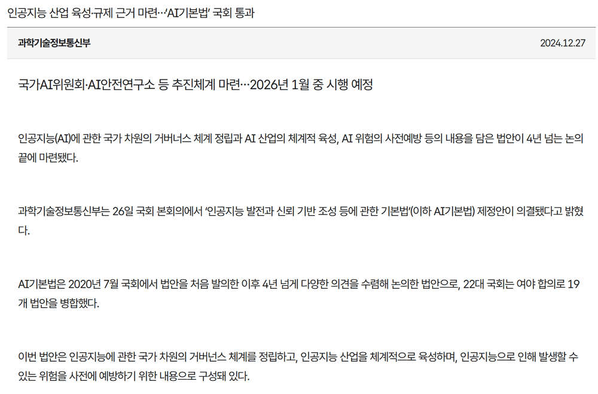
- 2024. 12. 26.국회 본회의 통과 (19개 법안 통합)
- 2025. 1. 21.공포
- 2026. 1. 22.시행. 시행 후 최소 1년간 계도기간
- 진흥: 국가 시책, 거버넌스, 기술 개발·데이터·인력·중소기업·해외 진출 지원
- 신뢰 기반 조성: 윤리원칙, 안전성·신뢰성 확보 시책
- 규제: 투명성 의무, 대규모 AI 안전성, 고영향 AI 의무, 국내대리인, 사실조사와 과태료
EU AI Act와 달리 금지 조항이 없고, 과징금 대신 최대 3천만 원의 과태료만 둔다. “규제보다 진흥”이라는 입법 의도가 제재 수준에 반영되어 있다.
진흥 체계: 국가 시책과 거버넌스
- 기술 개발·이용 활성화 (제13조)
- 기술 표준화 (제14조)
- 학습용데이터의 활용 (제15조)
- 국가기관 및 기업의 인공지능 도입 (제16조)
- 중소기업 및 창업 지원 (제17조, 제18조)
- 전문인력 양성 (제21조), 해외시장 진출 지원 (제22조)
- 데이터센터 활성화 (제25조)
- 인공지능 윤리원칙 (제27조)
- 안전한 이용을 위한 신뢰 기반 조성 시책 (제29조)
- 안전성·신뢰성 검인증 지원, 영향평가 가이드라인
- 국가인공지능위원회 (제7조): 대통령 소속, 기본계획 심의
- 인공지능정책센터 (제11조)
- 인공지능안전연구소 (제12조): 안전 연구·평가
- 한국인공지능진흥협회 (제26조)
주무부처는 과학기술정보통신부. 3년마다 인공지능 기본계획을 수립한다(제6조).
규율 대상: “고영향 인공지능”과 “생성형 인공지능”
EU의 “고위험”과 달리 “고영향”이라는 용어를 쓴다. 열거 영역은 EU 부속서 III와 상당 부분 겹치지만, 에너지·먹는물·원자력·의료기기 같은 제품 안전 영역이 함께 들어 있다.
- 에너지의 공급 (「에너지법」)
- 먹는물의 생산 공정 (「먹는물관리법」)
- 보건의료의 제공, 이용체계의 구축·운영 (「보건의료기본법」)
- 의료기기 및 디지털의료기기의 개발·이용
- 핵물질과 원자력시설의 안전한 관리·운영
- 범죄 수사나 체포 업무를 위한 생체인식정보(얼굴, 지문, 홍채, 손바닥 정맥 등)의 분석·활용
- 채용, 대출 심사 등 개인의 권리·의무 관계에 중대한 영향을 미치는 판단 또는 평가
- 교통수단, 교통시설, 교통체계의 주요한 작동·운영
- 공공서비스 제공에 필요한 자격 확인·결정, 비용 징수 등 국가기관등의 의사결정
- 유아·초등·중등교육에서의 학생 평가
- 그 밖에 대통령령으로 정하는 영역
수범자: 인공지능사업자
가. 인공지능개발사업자: 인공지능을 개발하여 제공하는 자
나. 인공지능이용사업자: 가목의 사업자가 제공한 인공지능을 이용하여 인공지능제품 또는 인공지능서비스를 제공하는 자
제31조 이하의 의무는 모두 인공지능사업자에게 부과된다. 이용자는 보호 대상이지 규율 대상이 아니다. 인공지능을 도입해 쓰는 기업도 그 인공지능으로 제품·서비스를 제공하지 않는 한 이용자다.
모델이나 시스템을 만들어 제공하는 자. 기반모델 제공자, 솔루션 개발사
남이 만든 인공지능을 가져다 제품·서비스로 제공하는 자. 외부 API로 챗봇을 운영하는 기업, 채용 솔루션을 도입한 회사
- 국가기관등도 사업자: 국가, 지방자치단체, 공공기관이 인공지능 서비스를 제공하면 같은 의무를 진다
- 한 주체가 둘 다: 생성형 AI를 직접 개발하여 대출 심사 서비스를 제공하면 개발사업자이자 이용사업자이고, 동시에 생성형 AI 사업자이자 고영향 AI 사업자가 된다
- 흔한 오해: 이용사업자 = EU의 배포자(deployer)? 그렇지 않다. 이용사업자는 남의 인공지능을 이용하되 인공지능 서비스를 제공하는 사업자다. EU의 배포자는 AI 시스템을 자기 업무에 사용하는 자이므로 국내법상으로는 이용자에 해당한다. 기본법은 이용자에게 의무를 지우지 않으므로, EU에서 배포자가 지는 의무(인간 감독자 지정, 로그 보관, 근로자 고지, 기본권 영향평가 등)에 대응하는 조항이 국내법에는 없다
주요 의무 (1): 투명성 확보 (제31조)
인공지능사업자는 고영향 또는 생성형 인공지능을 이용한 제품·서비스를 제공할 때 인공지능에 기반하여 운용된다는 사실을 이용자에게 사전에 고지
인공지능사업자는 생성형 인공지능 또는 이를 이용한 제품·서비스를 제공할 때 결과물이 인공지능에 의하여 생성되었다는 사실을 표시
인공지능사업자는 인공지능을 이용하여 실제와 구분하기 어려운 가상의 음향·이미지·영상 등의 결과물을 제공할 때 인공지능으로 생성되었음을 이용자가 명확하게 인식할 수 있는 방식으로 고지·표시. 예술적·창의적 표현물은 전시·향유를 저해하지 않는 방식으로 가능
| 항목 | EU AI Act 제50조 | 인공지능 기본법 제31조 |
|---|---|---|
| AI 상호작용 고지 | 자연인과 직접 상호작용하는 시스템의 제공자 (명백한 경우 예외) | 고영향·생성형 AI 제품·서비스를 제공하는 인공지능사업자. 사전 고지 |
| 생성물 표시 | 기계 판독 가능한 형식(워터마크). 제공자 의무 | 인공지능사업자가 생성 사실을 표시. 기계 판독 가능성 요건은 시행령·고시로 |
| 딥페이크 | 배포자가 공개. 예술적 저작물 예외 | 인공지능사업자가 명확히 인식 가능한 방식으로 고지·표시. 예술적 표현물 예외 |
| 위반 시 | 과징금 최대 1,500만 유로 또는 3% | 제1항 위반만 과태료 3천만 원 이하. 제2항·제3항은 사실조사·시정명령 대상 |
주요 의무 (2): 대규모 인공지능의 안전성 확보 (제32조)
- 대규모 인공지능 사업자는 다음 조치를 이행하고 그 결과를 과기정통부장관에게 제출
- 인공지능 수명주기별 위험의 식별·평가·완화
- 안전사고 모니터링과 대응을 위한 위험관리 체계 구축
- EU의 “시스템적 위험이 있는 범용 AI 모델”(1025 FLOPs)에 대응하는 조항. 문턱은 10배 높음
| 항목 | EU | 한국 |
|---|---|---|
| 기준 | 1025 FLOPs 또는 집행위 지정 | 1026 FLOPs (시행령) |
| 모델 평가·레드팀 | 의무 | 위험 식별·평가·완화에 포함 |
| 중대 사고 보고 | AI Office에 보고 | 모니터링·대응 체계 구축, 결과 제출 |
| 사이버 보안 | 명시 | 명시 없음 |
| 제재 | 과징금 1,500만 유로 / 3% | 사실조사, 시정명령. 불이행 시 과태료 |
2026년 시행 당시 1026 FLOPs를 넘는 모델은 소수의 해외 최전선 모델뿐이다. 국내 사업자에게 실제 적용될 가능성은 당분간 낮다는 평가.
주요 의무 (3): 고영향 인공지능 (제33조~제35조)
인공지능 또는 이를 이용한 제품·서비스를 제공하려는 자는 그것이 고영향 인공지능에 해당하는지 사전에 검토해야 한다. 필요하면 과기정통부장관에게 해당 여부 확인을 요청할 수 있다.
- 위험관리방안의 수립·운영
- 설명방안의 수립·시행 (기술적으로 가능한 범위). 최종 결과, 주요 판단 기준, 학습용데이터의 개요
- 이용자 보호 방안의 수립·운영
- 사람의 관리·감독
- 조치 내용의 문서 작성·보관
- 그 밖에 국가인공지능위원회가 정하는 사항
고영향 인공지능을 이용한 제품·서비스를 제공하는 경우 사전에 사람의 기본권에 미치는 영향을 평가하기 위하여 노력하여야 한다. 국가기관등은 고영향 AI 제품·서비스를 우선 구매할 때 영향평가를 받은 것을 우선 고려.
EU의 고위험 의무(제9~15조)와 구조가 비슷하지만 밀도가 낮다. 적합성 평가와 EU 데이터베이스 등록 같은 출시 전 관문이 없고, 영향평가는 노력 의무에 그친다. 구체적 조치는 대통령령으로 정한다.
주요 의무 (4): 국내대리인 지정, 사실조사와 벌칙
- 국내에 주소·영업소가 없는 인공지능사업자로서 이용자 수, 매출액 등이 대통령령 기준에 해당하는 자는 서면으로 국내대리인을 지정하고 과기정통부장관에게 신고
- 대리권의 범위: 대규모 AI 안전성 확보 의무 이행 결과 제출, 고영향 AI 해당 여부 확인 신청, 고영향 AI 안전성·신뢰성 확보 조치 이행 지원
- 개인정보 보호법, 정보통신망법의 국내대리인 제도와 같은 구조. 해외 사업자에게 법을 적용하기 위한 연결점
- 생성형 AI 표시·딥페이크 고지 의무 (제31조 제2항·제3항)
- 대규모 AI 안전성 확보 조치와 결과 제출 (제32조)
- 고영향 AI 안전성·신뢰성 확보 조치 (제34조 제1항)
- 위반 시 중지·시정명령
- 인공지능 기반 운용 사실 사전 고지 의무(제31조 제1항)를 이행하지 않은 자
- 국내대리인을 지정(제36조 제1항)하지 않은 해외 사업자
- 사실조사에 따른 중지·시정명령(제40조 제3항)을 이행하지 않은 자
- 2026. 1. 법 시행 후 최소 1년간 계도기간. 과태료 부과 유예
- 인공지능 기본법 제도개선 연구반 출범(2026. 3.), 하반기 개선안 마련 예정
EU의 과징금(매출액의 3~7%)에 비하면 제재가 약하다. 실효성은 사실조사와 시정명령, 그리고 조달·검인증 같은 간접 수단에 달려 있다.
EU AI Act와 인공지능 기본법 비교
| 항목 | EU AI Act (2024/1689) | 인공지능 기본법 (2026. 1. 시행) |
|---|---|---|
| 성격 | 규제법. 제품 안전 법제의 틀 | 기본법. 진흥 + 신뢰 기반 + 최소 규제 |
| 금지 | 8개 관행 금지 (제5조) | 없음 |
| 수범자 | 제공자(provider)와 배포자(deployer)에 차등적 의무. 수입자, 유통자, 국내대리인에게도 역할별 의무 | 인공지능사업자(인공지능을 개발하거나 인공지능 서비스를 제공하는 사업자). 배포자(국내법상 이용자)에게는 의무를 부과하지 않음 |
| 출시 전 절차 | 적합성 평가, CE 마킹, EU 데이터베이스 등록 | 고영향 여부 사전 검토. 확인 요청은 임의 |
| 운영 의무 | 위험관리, 데이터 거버넌스, 기술문서, 로그, 투명성, 인간 감독, 정확성·보안 | 위험관리방안, 설명방안, 이용자 보호, 사람의 관리·감독, 문서화 |
| 영향평가 | 공공기관·일부 민간 배포자의 기본권 영향평가 의무 (제27조) | 노력 의무 (제35조). 공공분야는 AI데이터행정법으로 의무화 |
| 생성형 AI | 투명성 의무 (제50조) + 범용 AI 모델 제공자 의무 (제53조) | 고지·표시 의무 (제31조) |
| 대형 모델 | 시스템적 위험 모델 (1025 FLOPs): 평가, 위험 완화, 사고 보고, 보안 | 대규모 AI (1026 FLOPs): 위험 식별·평가·완화, 결과 제출 |
| 역외 적용 | EU 시장 출시·이용 기준 | 국내 이용자 대상. 국내대리인 제도 |
| 제재 | 과징금 최대 3,500만 유로 또는 7% | 과태료 최대 3천만 원, 시정명령 |
| 집행 기관 | 회원국 감독당국 + EU AI Office (범용 AI 모델) | 과학기술정보통신부 |
AI 영향평가
규제의 실행 도구. 공공부문 실패 사례에서 출발하여 캐나다 AIA와 국내 공공분야 AI 영향평가 제도까지.
공공분야 AI의 실패 사례
고용연금부(DWP)가 지방자치단체와 함께 주택수당 부정수급 의심 청구를 분류하는 위험점수 시스템 구축. 과도하게 많은 수급자를 부정으로 분류했고, 고위험으로 분류된 사례의 3분의 2가 정상이었음
2010년대 후반부터 사회보장급여 부정수급 단속에 여러 AI 모델 도입. ‘비정형’ 가족구성 같은 모호한 개념을 임의로 활용하여, 장애로 떨어져 사는 부부, 별거 중인 노년 커플, 이주민 다세대 가구 등 합법적 생활양식을 가진 이들을 부정수급 조사 표적으로 삼음
세금청이 2013년부터 아동보조금 부정수급 단속에 자율학습 알고리즘 활용. 약 26,000명의 부모가 잘못 고발되어 보조금이 중단되거나 환수 요구를 받음. 수천 가정이 파산·빈곤에 내몰렸고 2021년 내각 총사퇴로 이어짐
소득 정보와 복지 지급 내역을 연동하여 초과 수령액을 자동 계산·통보. 정상 수급자를 부정수급자로 잘못 판정하는 오류가 대규모로 발생. 40만 명 이상에게 사실과 다른 부채 통지서 발송. 2023년 왕립위원회 조사 보고서
한양대학교 과학기술정책연구소, 「공공 AI 영향평가제 도입을 위한 정책 연구」 (2025. 7. 28.), 56-64면
공공부문 AI의 위험성: 왜 민간보다 더 위험한가
- 오류·부정확성: 오탐과 허위 산정이 자동화로 대규모·반복 확산
- 불투명성·설명 불가: 블랙박스 결정으로 이유 제시와 이의신청이 곤란
- 편향·차별: 학습데이터와 대리변수가 특정 집단을 표적화
- 프라이버시 침해·감시: 대규모 민감정보 결합과 상시 감시
- 공권력에 의한 강제: 행정처분, 수사, 과세 등 강제력을 통한 기본권 침해
- 회피 불가능성: 공공 서비스는 독점적이어서 다른 서비스로 이탈할 수 없음
- 대규모 민감정보 처리: 전 국민의 가족·보건·복지·소득·범죄 정보가 결합
- 전국적·반복적 확산: 전국 단위로 반복 적용되고, 피드백 루프를 통해 오류가 강화됨
그래서 EU AI Act는 공공기관 배포자에게 기본권 영향평가를 의무화했고(제27조), 한국은 공공분야 AI 영향평가를 별도 법률로 의무화했다.
영향평가(Impact Assessment)의 개념과 AI 영향평가 사례
부처·기관의 자동화된 의사결정 지침을 지원하기 위한 리스크 평가 도구. 온라인 설문으로 위험 수준을 자동 산정
고위험 AI 운영으로 영향을 받을 수 있는 개인의 권리에 대해 AI 시스템의 잠재적 영향을 평가. 공공기관과 신용·보험 등 일부 민간 배포자의 의무
AI를 활용하는 제품·서비스를 개발·제공·사용하는 조직이 개인, 집단, 사회에 미치는 영향을 고려하는 공식적이고 문서화된 프로세스
한양대학교 과학기술정책연구소, 앞의 보고서, 128, 141면
사례: 캐나다 알고리즘 영향평가(AIA) 제도
- 연방정부기관이 국민에게 영향을 미치는 자동화된 의사결정 시스템을 도입할 때 AIA 수행을 의무화 (2019. 4. 1. 발효)
- 근거: 재무부 자동 의사결정에 관한 지침(Directive on Automated Decision-Making). 법률이 아닌 행정규칙
- 실무자가 온라인 설문형 AIA를 작성하면 위험 수준(Level I~IV)이 자동 산정. 문항 영역: 기본 정보, 사업 동기와 긍정적 영향, 시스템 정보, 의사결정 내용, 영향 평가, 데이터 출처·유형·품질, 절차적 공정성
- 결과는 open.canada.ca에 공개
- 대부분 Level II. 동료 검토와 인간의 최종 결정 개입 등 완화 조치를 거침
- Level III: 여권 발급 신청 처리 자동화, 장애 보훈 급여 자동판정 지원
- Level IV 분류 사례 없음
| 등급 | 점수 | 의미와 요구 조치 |
|---|---|---|
| Level I | 0~25% | 영향이 거의 없거나 매우 사소. 정보제공 챗봇, 내부 보조도구 |
| Level II | 26~50% | 일정한 영향이 있으나 되돌릴 수 있고 단기적. 부서장·고위 관리자 승인, 전문가 동료 검토 |
| Level III | 51~75% | 되돌리기 어렵거나 복구에 오래 걸림. 고위직 주기 보고, 법무·개인정보 부서 검토, 독립 전문가 감사 |
| Level IV | 76~100% | 영향이 매우 높고 광범위. 형사 사법의 위험도 평가 등 자유 제약, 사회 전반에 영향을 미치는 정책 결정 지원 |
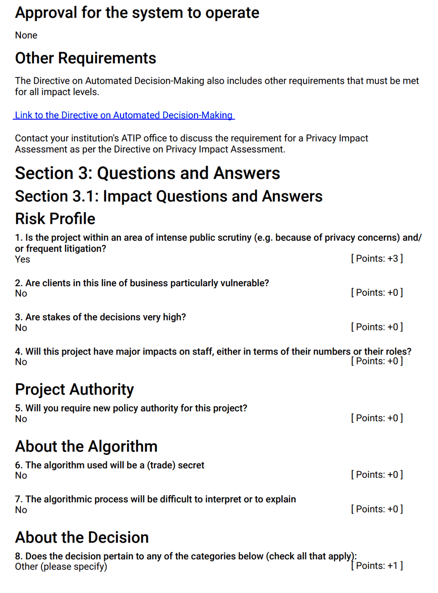
한양대학교 과학기술정책연구소, 앞의 보고서, 81-94면 · open.canada.ca
국내: 공공분야 인공지능 영향평가 (AI데이터행정법 제32조)
② 다음 경우에는 영향평가를 실시하지 아니할 수 있다. 1. 국가안전보장·국방·통일·외교관계 등으로 보안 유지나 고도의 기밀 보호가 필요한 경우 2. 단순, 반복적이거나 경미하여 기본권에 미치는 파급효과가 크지 아니한 경우 3. 인공지능 기본법 제35조에 따른 영향평가를 실시한 고영향 인공지능인 경우 (1~3호는 행정안전부장관과 협의) 4. 그 밖에 대통령령으로 정하는 경우
③ 공공기관의 장은 전문기관 등에 평가의 실시를 의뢰할 수 있다.
④ 영향평가를 받은 인공지능을 활용하는 과정에서 발생할 수 있는 오류 등 위험에 대처하기 위한 위험관리방안을 수립·시행하여야 한다.
⑤ 행정안전부장관은 행정적·기술적·재정적 지원을 할 수 있다. ⑥ 기준·방법·절차는 대통령령으로 정한다.
- 의무: 기본법 제35조(노력 의무)와 달리 공공기관에는 평가와 결과 공표가 의무
- 대상: 공공기관이 도입하는 모든 인공지능. 고영향 여부를 묻지 않음
- 주무부처: 행정안전부 (기본법의 과기정통부와 다름)
- 사후 관리: 위험관리방안 수립·시행
- 공공기관장은 한국지능정보사회진흥원(NIA) 또는 추가 고시 기관에 평가 실시를 의뢰할 수 있음
- 캐나다 AIA처럼 위험 수준이 높으면 외부 전문기관 평가를 권고하는 운용이 논의됨
고영향 AI 영향평가(기본법 제35조)와의 관계
AI데이터행정법 제32조 제2항 제3호: 기본법 제35조에 따른 영향평가를 실시한 고영향 AI는 공공분야 AI 영향평가를 면제할 수 있다. 공공부문 AI 중 고영향 AI에 해당하는 것: 범죄 수사·체포를 위한 생체인식정보 분석(바), 채용·대출 심사 등(사), 공공서비스 자격 확인·결정 등 국가기관의 의사결정(자), 학생 평가(차).
문제 공공분야 AI 영향평가는 결과 공표를 요구하지만 기본법 제35조 영향평가에는 공표 의무가 없다. 기본권 침해 가능성이 가장 높은 고영향 AI에 대해 결과를 공표하지 않는 것은 불균형이다. 면제하더라도 결과 공개와 위험관리방안 수립 의무는 같게 운용해야 한다.
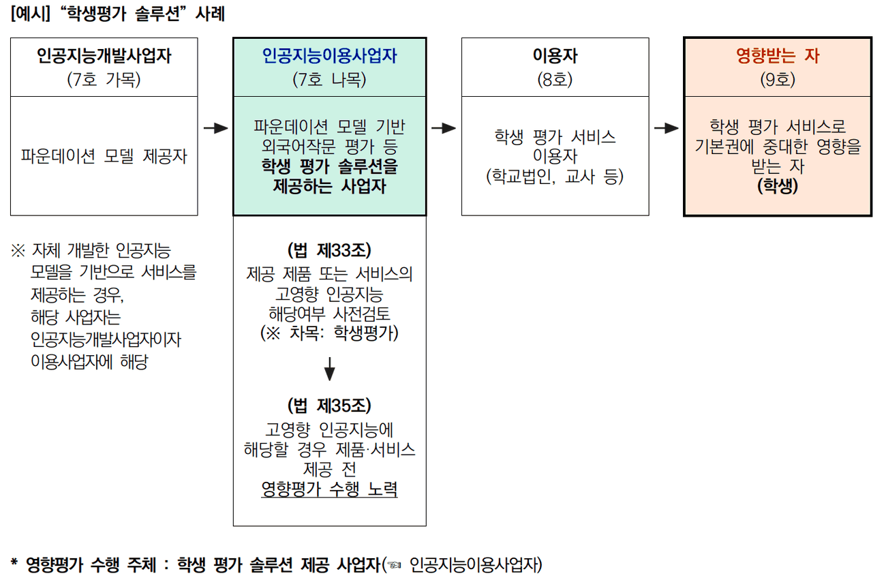
과학기술정보통신부·정보통신정책연구원, 「인공지능 영향평가 가이드라인」 (2026. 1.), 6면
예비평가(Triage)와 평가 항목
- 대국민 서비스가 아닌 경우로서 국민의 권리·의무에 관한 정책 의사결정에 사용하지 않는 경우
- 이미 영향평가를 실시한 인공지능을 동일한 목적·대상·운영 방식으로 변경 없이 재도입하는 경우
- 제한된 범위에서 성능·효과 검증 목적으로 한시적으로 운영하는 경우
- 영향평가 실시 대상인지 먼저 가려야 한다. 모든 챗봇과 내부 보조도구에 전면 평가를 요구하면 제도가 작동하지 않음
- 예비평가 항목: 기본권에 미치는 파급효과, 의사결정의 자동화 정도, 대규모 민감정보 활용 여부 등
- 공공기관장은 행정안전부장관에게 실시 대상 여부 확인을 요청할 수 있음 (시행령 제26조)
- 인공지능의 의사결정 과정 및 결과에 대한 투명성
- 인공지능의 성능 및 결과의 신뢰성
- 데이터 및 알고리즘에 따른 편향 발생 가능성
- 그 밖에 행정안전부장관이 정하여 고시하는 사항
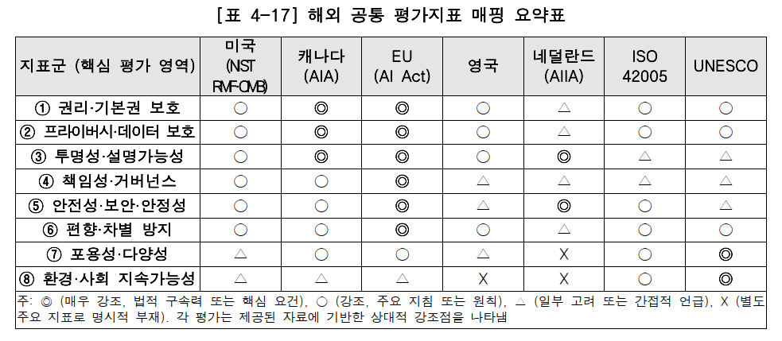
한양대학교 과학기술정책연구소, 앞의 보고서, 153-154, 170면
10강 정리
- 왜 규제하는가허위조작정보, 환각, 편향, 생명·신체 위험이 실제 피해로 나타났다. 윤리원칙은 구속력이 없고, 위험 평가는 과대와 과소 사이에서 흔들린다
- EU AI Act의 구조용도에 따라 금지, 고위험, 제한적 위험, 최소 위험으로 나누고, 범용 AI 모델은 용도와 무관하게 별도 규제한다. 역외 적용, 매출액 비례 과징금
- 금지 (제5조)행동 조작, 취약성 악용, 사회적 점수, 범죄 예측, 얼굴 DB 무차별 구축, 직장·학교 감정 추론, 민감정보 생체분류, 법집행 실시간 원격 생체식별
- 고위험 (제6조~)부속서 I(제품 안전)과 III(8개 영역). 출시 전 적합성 평가, 운영 중 위험관리·데이터·문서·로그·인간 감독·보안. 기술표준이 내용을 채운다
- 투명성 (제50조)챗봇 고지, 생성물 워터마크, 감정인식 고지, 딥페이크·기사 공개. 생성형 AI를 직접 겨냥
- 범용 AI 모델 (제53조~)기술문서, 정보 제공, 저작권 opt-out 준수, 학습 데이터 요지 공개. 1025 FLOPs 이상은 레드팀·위험 완화·사고 보고·보안 추가
- 인공지능 기본법진흥과 최소 규제. 고영향 AI 사전 검토와 안전·신뢰 조치, 생성형 AI 표시, 대규모 AI(1026 FLOPs) 안전성, 국내대리인. 금지 없음, 과태료 3천만 원
- AI 영향평가공공부문 실패 사례가 제도를 낳았다. 캐나다 AIA의 등급제, 국내 공공분야 AI 영향평가(의무·공표)와 고영향 AI 영향평가(노력 의무)의 관계